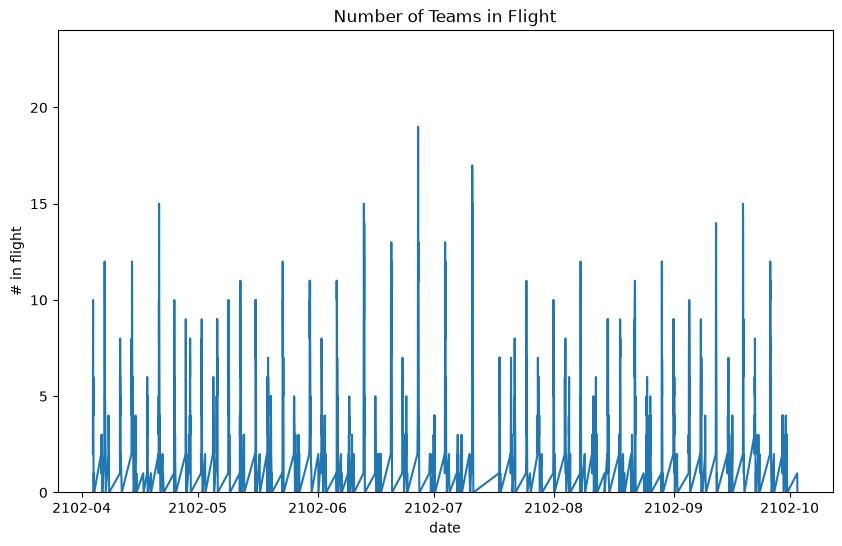
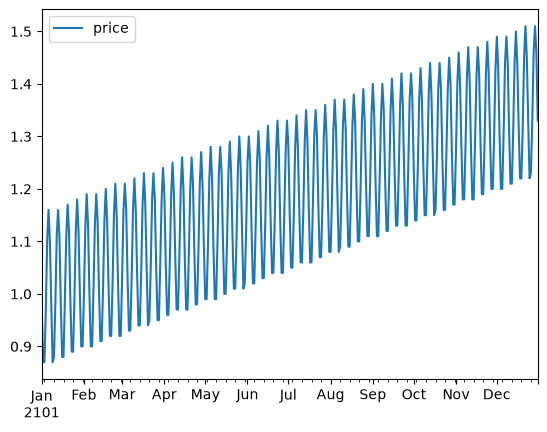
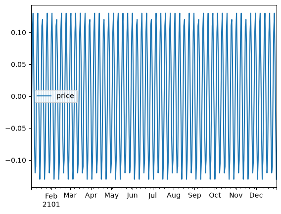
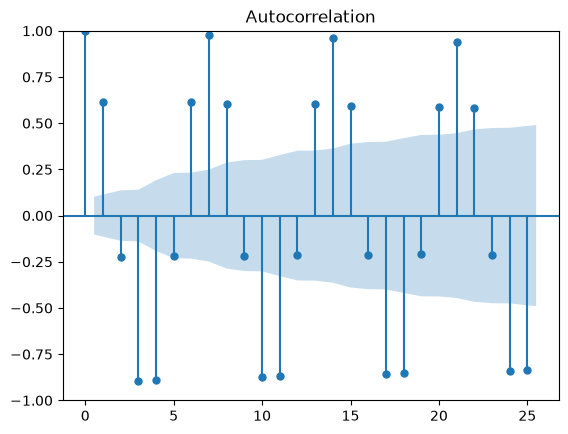
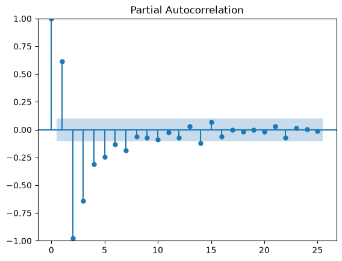
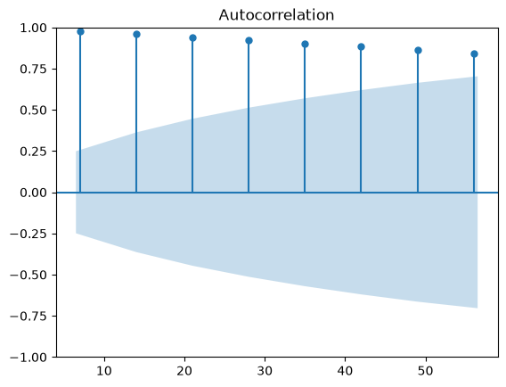
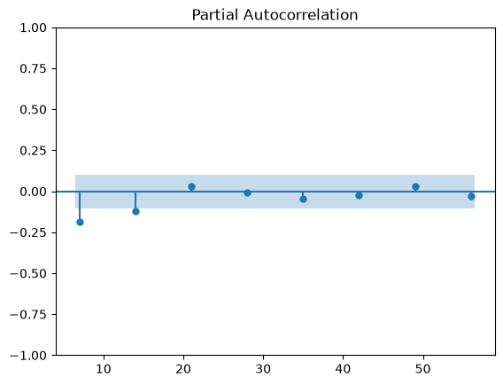
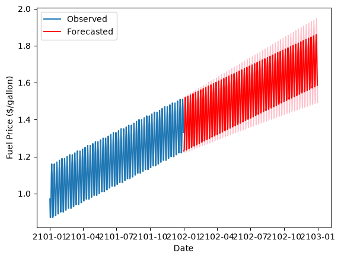

%pip install --upgrade -q matplotlib numpy pandas statsmodelsTime Series Analysis for Transportation
Time Series Analysis
Overview
This is a hands-on implementation of ARIMA models using a fictious study case and sythetic datasets from Datacamp.
Here’s the story:
[E-mail from Mr. X]
To the Office of Transportation at The 22nd Century Sporting League,
After our inaugural 2101 season, The League is looking for ways to optimize our game scheduling process and costs. We know that transportation logistics are a major variable to consider during scheduling, and as such, we’ve got a few questions for you.
Our primary areas of focus are surrounding the number of jets that The League needs to own, and the cost of fuel for those flights. If we want The League to enjoy continued success, we’ll need to make sure we manage transportation costs.
We’re sharing schedule data for the upcoming 2102 season. On each row, you’ll find information about which teams are needing to travel to their next set of games, the time the flight will likely depart (based on our estimations of gameplay durations) and the time the flight will likely land.
Additionally, we’re also providing the fuel price that was paid each day during this past 2101 season. The fuel price fluctuates over time, but we’re hoping you’ll be able to project it to the future to help with the analysis.
The Data
- team_flights.csv
| Column | Description |
|---|---|
team_name |
Official team name |
departure_datetime |
Date and Time (in UTC) when the flight will depart |
landing_datetime |
Date and Time (in UTC) when the flight will land |
travel_distance_miles |
Total travel distance in miles |
- fuel_price.csv
| Column | Description |
|---|---|
date |
Date when the fuel price was recorded |
fuel_price |
Corresponding fuel price (in $ per gallon) |
Important Assumptions
- Assume that each team’s jet fills up with fuel equivalent to 1 gallon per mile-of-travel
- Assume that the jet is fueled on the day the travel departs (and thus can use the fuel price corresponding to the departure date)
Install and Import Packages
import matplotlib.pyplot as plt
import numpy as np
import pandas as pdLoad Dataset
team_flights_df = pd.read_csv('data/team_flights.csv')
fuel_prices_2101_df = pd.read_csv('data/fuel_prices_2101.csv')team_flights_df| team_name | departure_datetime | landing_datetime | travel_distance_miles | |
|---|---|---|---|---|
| 0 | Agile Antelopes | 2102-04-06 21:37:00 | 2102-04-07 00:35:57 | 1491.250000 |
| 1 | Agile Antelopes | 2102-04-10 23:57:00 | 2102-04-11 01:35:40 | 822.222222 |
| 2 | Agile Antelopes | 2102-04-14 00:29:00 | 2102-04-14 05:02:55 | 2282.638889 |
| 3 | Agile Antelopes | 2102-04-21 03:31:00 | 2102-04-21 05:23:09 | 934.583333 |
| 4 | Agile Antelopes | 2102-04-24 22:23:00 | 2102-04-25 00:25:50 | 1023.611111 |
| ... | ... | ... | ... | ... |
| 1140 | Diligent Data Scientists | 2102-09-05 01:22:00 | 2102-09-05 03:14:19 | 935.972222 |
| 1141 | Diligent Data Scientists | 2102-09-07 23:56:00 | 2102-09-08 04:26:26 | 2253.611111 |
| 1142 | Diligent Data Scientists | 2102-09-18 22:20:00 | 2102-09-18 23:00:50 | 340.277778 |
| 1143 | Diligent Data Scientists | 2102-09-23 03:37:00 | 2102-09-23 05:40:32 | 1029.444444 |
| 1144 | Diligent Data Scientists | 2102-09-25 22:04:00 | 2102-09-26 00:17:24 | 1111.666667 |
1145 rows × 4 columns
team_flights_df.info()<class 'pandas.DataFrame'>
RangeIndex: 1145 entries, 0 to 1144
Data columns (total 4 columns):
# Column Non-Null Count Dtype
--- ------ -------------- -----
0 team_name 1145 non-null str
1 departure_datetime 1145 non-null str
2 landing_datetime 1145 non-null str
3 travel_distance_miles 1145 non-null float64
dtypes: float64(1), str(3)
memory usage: 35.9 KBfuel_prices_2101_df| date | price | |
|---|---|---|
| 0 | 2101-01-01 | 0.97 |
| 1 | 2101-01-02 | 0.87 |
| 2 | 2101-01-03 | 0.87 |
| 3 | 2101-01-04 | 0.97 |
| 4 | 2101-01-05 | 1.10 |
| ... | ... | ... |
| 360 | 2101-12-27 | 1.33 |
| 361 | 2101-12-28 | 1.46 |
| 362 | 2101-12-29 | 1.51 |
| 363 | 2101-12-30 | 1.46 |
| 364 | 2101-12-31 | 1.33 |
365 rows × 2 columns
fuel_prices_2101_df.info()<class 'pandas.DataFrame'>
RangeIndex: 365 entries, 0 to 364
Data columns (total 2 columns):
# Column Non-Null Count Dtype
--- ------ -------------- -----
0 date 365 non-null str
1 price 365 non-null float64
dtypes: float64(1), str(1)
memory usage: 5.8 KBData Preprocessing and EDA
team_flights_df['departure_datetime'] = pd.to_datetime(team_flights_df['departure_datetime'])
team_flights_df['landing_datetime'] = pd.to_datetime(team_flights_df['landing_datetime'])
fuel_prices_2101_df['date'] = pd.to_datetime(fuel_prices_2101_df['date'])
fuel_prices_2101_df = fuel_prices_2101_df.set_index('date')team_flights_df.info()<class 'pandas.DataFrame'>
RangeIndex: 1145 entries, 0 to 1144
Data columns (total 4 columns):
# Column Non-Null Count Dtype
--- ------ -------------- -----
0 team_name 1145 non-null str
1 departure_datetime 1145 non-null datetime64[us]
2 landing_datetime 1145 non-null datetime64[us]
3 travel_distance_miles 1145 non-null float64
dtypes: datetime64[us](2), float64(1), str(1)
memory usage: 35.9 KBteam_flights_df| team_name | departure_datetime | landing_datetime | travel_distance_miles | |
|---|---|---|---|---|
| 0 | Agile Antelopes | 2102-04-06 21:37:00 | 2102-04-07 00:35:57 | 1491.250000 |
| 1 | Agile Antelopes | 2102-04-10 23:57:00 | 2102-04-11 01:35:40 | 822.222222 |
| 2 | Agile Antelopes | 2102-04-14 00:29:00 | 2102-04-14 05:02:55 | 2282.638889 |
| 3 | Agile Antelopes | 2102-04-21 03:31:00 | 2102-04-21 05:23:09 | 934.583333 |
| 4 | Agile Antelopes | 2102-04-24 22:23:00 | 2102-04-25 00:25:50 | 1023.611111 |
| ... | ... | ... | ... | ... |
| 1140 | Diligent Data Scientists | 2102-09-05 01:22:00 | 2102-09-05 03:14:19 | 935.972222 |
| 1141 | Diligent Data Scientists | 2102-09-07 23:56:00 | 2102-09-08 04:26:26 | 2253.611111 |
| 1142 | Diligent Data Scientists | 2102-09-18 22:20:00 | 2102-09-18 23:00:50 | 340.277778 |
| 1143 | Diligent Data Scientists | 2102-09-23 03:37:00 | 2102-09-23 05:40:32 | 1029.444444 |
| 1144 | Diligent Data Scientists | 2102-09-25 22:04:00 | 2102-09-26 00:17:24 | 1111.666667 |
1145 rows × 4 columns
fuel_prices_2101_df.info()<class 'pandas.DataFrame'>
DatetimeIndex: 365 entries, 2101-01-01 to 2101-12-31
Data columns (total 1 columns):
# Column Non-Null Count Dtype
--- ------ -------------- -----
0 price 365 non-null float64
dtypes: float64(1)
memory usage: 5.7 KBfuel_prices_2101_df| price | |
|---|---|
| date | |
| 2101-01-01 | 0.97 |
| 2101-01-02 | 0.87 |
| 2101-01-03 | 0.87 |
| 2101-01-04 | 0.97 |
| 2101-01-05 | 1.10 |
| ... | ... |
| 2101-12-27 | 1.33 |
| 2101-12-28 | 1.46 |
| 2101-12-29 | 1.51 |
| 2101-12-30 | 1.46 |
| 2101-12-31 | 1.33 |
365 rows × 1 columns
fuel_prices_2101_df.indexDatetimeIndex(['2101-01-01', '2101-01-02', '2101-01-03', '2101-01-04',
'2101-01-05', '2101-01-06', '2101-01-07', '2101-01-08',
'2101-01-09', '2101-01-10',
...
'2101-12-22', '2101-12-23', '2101-12-24', '2101-12-25',
'2101-12-26', '2101-12-27', '2101-12-28', '2101-12-29',
'2101-12-30', '2101-12-31'],
dtype='datetime64[us]', name='date', length=365, freq=None)fuel_prices_2101_df.index = pd.DatetimeIndex(fuel_prices_2101_df.index.values).to_period('D')fuel_prices_2101_df.indexPeriodIndex(['2101-01-01', '2101-01-02', '2101-01-03', '2101-01-04',
'2101-01-05', '2101-01-06', '2101-01-07', '2101-01-08',
'2101-01-09', '2101-01-10',
...
'2101-12-22', '2101-12-23', '2101-12-24', '2101-12-25',
'2101-12-26', '2101-12-27', '2101-12-28', '2101-12-29',
'2101-12-30', '2101-12-31'],
dtype='period[D]', length=365)Analysis Goals 1
We’re interested in the maximum number of jets that The League needs to own.
Naively, The League can prepare the number of jets that equals to number of the total flights in the season (1145 flights). However, of course, it is not the optimal solution.
Example:
To solve this problem, we can check at each of those timestamps in time_flights_df whether the flight is currently in progress.
Let’s create a time-series graph that shows how many teams will be “in flight” throughout the 2102 season. Use this graphic to tell us the maximum number of teams simultaneously in flight.
# first we'll want to know the minimum time between any two unique flight event times in the season
# to do this we first create a single array of times
all_datetimes = pd.concat([team_flights_df['departure_datetime'], team_flights_df['landing_datetime']])
# select unique datetimes to list
all_datetimes = list(set(all_datetimes))
# convert to data frame
in_flight_df = pd.DataFrame({'date':sorted(all_datetimes), # sort the datetimes in ascending order
'in_flight':0})
# iterate through each known flight, and increment corresponding rows of in_flight_df
for index, flight in team_flights_df.iterrows():
in_flight_df.loc[(in_flight_df['date']>=flight['departure_datetime']) &
(in_flight_df['date']<flight['landing_datetime']),'in_flight'] += 1
# Plot
fig, ax = plt.subplots(figsize=(10, 6))
ax.plot(in_flight_df['date'], in_flight_df['in_flight'])
ax.set_ylim(0, max(in_flight_df['in_flight']) + 5)
ax.set_xlabel('date')
ax.set_ylabel('# in flight')
ax.set_title('Number of Teams in Flight')
print('Max # in flight:', max(in_flight_df['in_flight']))
plt.show()Max # in flight: 19
Analysis Goals 2
Use 2101’s jet fuel prices to project jet fuel prices for 2102. Apply these projections to every flight taken by every team to determine the overall fuel spend for 2102. Store your result in a variable named total_fuel_spend_2102_dollars.
fuel_prices_2101_df.plot()
The data appears to have a seasonality. Let’s take a further look.
ACF and PACF Plot for Non-Seasonal Part
# first implement differencing to make the data stationary
diff_df = fuel_prices_2101_df.diff().dropna()
diff_df.plot()
# then, plot the autocorrelation function (acf) and partial autocorrelation function (pacf)
# to determine the order of ARIMA model, also the number of time steps per cycle (S)
from statsmodels.graphics.tsaplots import plot_acf, plot_pacf
plot_acf(diff_df, lags=25)
plot_pacf(diff_df, lags=25)
plt.show()

The fuel price data has seasonality with the number of time steps per cycle is \(S = 7\).
This means the appropriate model for forecasting the fuel price is SARIMA model.
So that, we need the value of parameters: - p, q for non-seasonal part. Note that we have already used d = 1 for the differencing. - P, D, Q for seasonal part. For the D parameter, notice that the fuel price data has stable amplitude between the baseline and peak of seasonality. Therefore, let’s use D = 0.
Based on the ACF and PACF plots above, here are the candidates for p and q: - \(p = 1 \text{ or } 2\): Suggested by the significant spikes at lags 1 and 2 in the PACF plot. - \(q = 1, 2 \text{ or } 3\): Suggested by the significant spikes at lags 1 through 3 in the ACF plot.
Now, let’s find the candidates for P and Q using the same dataframe with differencing for \(\text{lags} = S, 2S, 3S, ...\)
ACF and PACF Plot for Seasonal Part
plot_acf(diff_df, lags=[7, 14, 21, 28, 35, 42, 49, 56])
plot_pacf(diff_df, lags=[7, 14, 21, 28, 35, 42, 49, 56])
plt.show()

Based on the plots above, we can see that there is a decay in ACF plot and a cut-off in PACF plot.
These results are indicating the AR-only model, with: - \(P = 1 \text{ or } 2\): Indicated by the sharp cut-off at the first or second seasonal lag (\(7\)) in the PACF plot, while the seasonal ACF tails off. - \(Q = 0\).
Selecting The Best Parameters Candidates Using AIC Comparation
To select the best paramaters among the candidates of parameters values, we can use AIC comparation.
from statsmodels.tsa.statespace.sarimax import SARIMAX
AIC = {}
for p in range(1, 3):
for q in range(1, 4):
for P in range(1, 3):
model = SARIMAX(fuel_prices_2101_df,
order=(p, 1, q), # for linear growth term
seasonal_order=(P, 0, 0, 7) # for 7 day periodicity
)
result = model.fit()
AIC[(p, q, P)] = result.aic
for p, q, P in AIC:
print(f"SARIMA ({p},1,{q}) x ({P},0,0,7) - AIC: {AIC[(p,q,P)]}")C:\Users\HYPE AMD\AppData\Local\Packages\PythonSoftwareFoundation.Python.3.13_qbz5n2kfra8p0\LocalCache\local-packages\Python313\site-packages\statsmodels\tsa\statespace\mlemodel.py:737: ConvergenceWarning: Maximum Likelihood optimization failed to converge. Check mle_retvals
mlefit = super().fit(
C:\Users\HYPE AMD\AppData\Local\Packages\PythonSoftwareFoundation.Python.3.13_qbz5n2kfra8p0\LocalCache\local-packages\Python313\site-packages\statsmodels\tsa\statespace\mlemodel.py:679: EstimationWarning: Non-invertible starting MA parameters found. Using zeros as starting parameters.
start_params = self.start_params
C:\Users\HYPE AMD\AppData\Local\Packages\PythonSoftwareFoundation.Python.3.13_qbz5n2kfra8p0\LocalCache\local-packages\Python313\site-packages\statsmodels\tsa\statespace\mlemodel.py:679: EstimationWarning: Non-invertible starting MA parameters found. Using zeros as starting parameters.
start_params = self.start_params
C:\Users\HYPE AMD\AppData\Local\Packages\PythonSoftwareFoundation.Python.3.13_qbz5n2kfra8p0\LocalCache\local-packages\Python313\site-packages\statsmodels\tsa\statespace\mlemodel.py:679: EstimationWarning: Non-stationary starting autoregressive parameters found. Using zeros as starting parameters.
start_params = self.start_params
C:\Users\HYPE AMD\AppData\Local\Packages\PythonSoftwareFoundation.Python.3.13_qbz5n2kfra8p0\LocalCache\local-packages\Python313\site-packages\statsmodels\tsa\statespace\mlemodel.py:679: EstimationWarning: Non-stationary starting autoregressive parameters found. Using zeros as starting parameters.
start_params = self.start_paramsSARIMA (1,1,1) x (1,0,0,7) - AIC: -2820.7311073159
SARIMA (1,1,1) x (2,0,0,7) - AIC: -2874.323897051524
SARIMA (1,1,2) x (1,0,0,7) - AIC: -2819.6958595480196
SARIMA (1,1,2) x (2,0,0,7) - AIC: -2795.4093238640544
SARIMA (1,1,3) x (1,0,0,7) - AIC: -2818.3447812568297
SARIMA (1,1,3) x (2,0,0,7) - AIC: -2884.4329128949726
SARIMA (2,1,1) x (1,0,0,7) - AIC: -2819.88276805261
SARIMA (2,1,1) x (2,0,0,7) - AIC: -2848.561998060254
SARIMA (2,1,2) x (1,0,0,7) - AIC: -2593.57006120841
SARIMA (2,1,2) x (2,0,0,7) - AIC: -2661.343793974922
SARIMA (2,1,3) x (1,0,0,7) - AIC: -2810.146201925937
SARIMA (2,1,3) x (2,0,0,7) - AIC: -2887.2338148395866C:\Users\HYPE AMD\AppData\Local\Packages\PythonSoftwareFoundation.Python.3.13_qbz5n2kfra8p0\LocalCache\local-packages\Python313\site-packages\statsmodels\tsa\statespace\mlemodel.py:737: ConvergenceWarning: Maximum Likelihood optimization failed to converge. Check mle_retvals
mlefit = super().fit(From the results above, the best parameters are: \[p = 2, d = 1, q = 3, P = 2, D = 0, Q = 0, S = 7,\] with \(AIC = -2887.23\) (most negative).
Fit The Best Model
# initialize SARIMAX model with selected parameters
model = SARIMAX(fuel_prices_2101_df,
order=(2, 1, 3), # for linear growth term
seasonal_order=(2, 0, 0, 7) # for 7 day periodicity
)
# fit the model to the data
result = model.fit()C:\Users\HYPE AMD\AppData\Local\Packages\PythonSoftwareFoundation.Python.3.13_qbz5n2kfra8p0\LocalCache\local-packages\Python313\site-packages\statsmodels\tsa\statespace\mlemodel.py:737: ConvergenceWarning: Maximum Likelihood optimization failed to converge. Check mle_retvals
mlefit = super().fit(# forecast fuel prices for 2102
forecast = result.get_forecast(steps=365) # forecast prices for 365 days in 2102
mean_forecast = forecast.predicted_mean
confidence_intervals = forecast.conf_int()mean_forecast2102-01-01 1.229842
2102-01-02 1.235831
2102-01-03 1.335892
2102-01-04 1.465821
2102-01-05 1.519822
...
2102-12-27 1.813876
2102-12-28 1.859531
2102-12-29 1.803326
2102-12-30 1.679897
2102-12-31 1.584557
Freq: D, Name: predicted_mean, Length: 365, dtype: float64confidence_intervals| lower price | upper price | |
|---|---|---|
| 2102-01-01 | 1.221592 | 1.238091 |
| 2102-01-02 | 1.227578 | 1.244085 |
| 2102-01-03 | 1.327636 | 1.344147 |
| 2102-01-04 | 1.457565 | 1.474076 |
| 2102-01-05 | 1.511567 | 1.528078 |
| ... | ... | ... |
| 2102-12-27 | 1.723026 | 1.904726 |
| 2102-12-28 | 1.768677 | 1.950385 |
| 2102-12-29 | 1.712392 | 1.894260 |
| 2102-12-30 | 1.588666 | 1.771128 |
| 2102-12-31 | 1.492204 | 1.676910 |
365 rows × 2 columns
Plot Results
# plot the forecasted fuel prices for 2102
plt.plot(fuel_prices_2101_df.index.to_timestamp().date, fuel_prices_2101_df['price'], label='Observed')
plt.plot(mean_forecast.index.to_timestamp().date, mean_forecast.values, label='Forecasted', color='r')
plt.fill_between(mean_forecast.index, confidence_intervals.loc[:,'lower price'], confidence_intervals.loc[:,'upper price'], color='pink')
plt.xlabel('Date')
plt.ylabel('Fuel Price ($/gallon)')
plt.legend()
plt.show()
# convert to a dataframe
fuel_prices_2102_forecast_df = pd.DataFrame(data={"date": mean_forecast.index,
"price":mean_forecast.values})
fuel_prices_2102_forecast_df | date | price | |
|---|---|---|
| 0 | 2102-01-01 | 1.229842 |
| 1 | 2102-01-02 | 1.235831 |
| 2 | 2102-01-03 | 1.335892 |
| 3 | 2102-01-04 | 1.465821 |
| 4 | 2102-01-05 | 1.519822 |
| ... | ... | ... |
| 360 | 2102-12-27 | 1.813876 |
| 361 | 2102-12-28 | 1.859531 |
| 362 | 2102-12-29 | 1.803326 |
| 363 | 2102-12-30 | 1.679897 |
| 364 | 2102-12-31 | 1.584557 |
365 rows × 2 columns
fuel_prices_2102_forecast_df.info()<class 'pandas.DataFrame'>
RangeIndex: 365 entries, 0 to 364
Data columns (total 2 columns):
# Column Non-Null Count Dtype
--- ------ -------------- -----
0 date 365 non-null period[D]
1 price 365 non-null float64
dtypes: float64(1), period[D](1)
memory usage: 5.8 KB# now, apply to the flight data
# first, extract only the date part from the departure datetime
team_flights_df['date'] = team_flights_df['departure_datetime'].dt.date
team_flights_df| team_name | departure_datetime | landing_datetime | travel_distance_miles | date | |
|---|---|---|---|---|---|
| 0 | Agile Antelopes | 2102-04-06 21:37:00 | 2102-04-07 00:35:57 | 1491.250000 | 2102-04-06 |
| 1 | Agile Antelopes | 2102-04-10 23:57:00 | 2102-04-11 01:35:40 | 822.222222 | 2102-04-10 |
| 2 | Agile Antelopes | 2102-04-14 00:29:00 | 2102-04-14 05:02:55 | 2282.638889 | 2102-04-14 |
| 3 | Agile Antelopes | 2102-04-21 03:31:00 | 2102-04-21 05:23:09 | 934.583333 | 2102-04-21 |
| 4 | Agile Antelopes | 2102-04-24 22:23:00 | 2102-04-25 00:25:50 | 1023.611111 | 2102-04-24 |
| ... | ... | ... | ... | ... | ... |
| 1140 | Diligent Data Scientists | 2102-09-05 01:22:00 | 2102-09-05 03:14:19 | 935.972222 | 2102-09-05 |
| 1141 | Diligent Data Scientists | 2102-09-07 23:56:00 | 2102-09-08 04:26:26 | 2253.611111 | 2102-09-07 |
| 1142 | Diligent Data Scientists | 2102-09-18 22:20:00 | 2102-09-18 23:00:50 | 340.277778 | 2102-09-18 |
| 1143 | Diligent Data Scientists | 2102-09-23 03:37:00 | 2102-09-23 05:40:32 | 1029.444444 | 2102-09-23 |
| 1144 | Diligent Data Scientists | 2102-09-25 22:04:00 | 2102-09-26 00:17:24 | 1111.666667 | 2102-09-25 |
1145 rows × 5 columns
team_flights_df.info()<class 'pandas.DataFrame'>
RangeIndex: 1145 entries, 0 to 1144
Data columns (total 5 columns):
# Column Non-Null Count Dtype
--- ------ -------------- -----
0 team_name 1145 non-null str
1 departure_datetime 1145 non-null datetime64[us]
2 landing_datetime 1145 non-null datetime64[us]
3 travel_distance_miles 1145 non-null float64
4 date 1145 non-null object
dtypes: datetime64[us](2), float64(1), object(1), str(1)
memory usage: 44.9+ KBprint(fuel_prices_2102_forecast_df['date'].dt.to_timestamp().dt.date)0 2102-01-01
1 2102-01-02
2 2102-01-03
3 2102-01-04
4 2102-01-05
...
360 2102-12-27
361 2102-12-28
362 2102-12-29
363 2102-12-30
364 2102-12-31
Name: date, Length: 365, dtype: object# then, join fuel_prices DataFrame based on the date
fuel_prices_2102_forecast_df['date'] = fuel_prices_2102_forecast_df['date'].dt.to_timestamp().dt.date
fuel_prices_2102_forecast_df = fuel_prices_2102_forecast_df.set_index('date')
merged_df = team_flights_df.join(fuel_prices_2102_forecast_df, on='date', how='left')
merged_df| team_name | departure_datetime | landing_datetime | travel_distance_miles | date | price | |
|---|---|---|---|---|---|---|
| 0 | Agile Antelopes | 2102-04-06 21:37:00 | 2102-04-07 00:35:57 | 1491.250000 | 2102-04-06 | 1.608313 |
| 1 | Agile Antelopes | 2102-04-10 23:57:00 | 2102-04-11 01:35:40 | 822.222222 | 2102-04-10 | 1.334504 |
| 2 | Agile Antelopes | 2102-04-14 00:29:00 | 2102-04-14 05:02:55 | 2282.638889 | 2102-04-14 | 1.560950 |
| 3 | Agile Antelopes | 2102-04-21 03:31:00 | 2102-04-21 05:23:09 | 934.583333 | 2102-04-21 | 1.567660 |
| 4 | Agile Antelopes | 2102-04-24 22:23:00 | 2102-04-25 00:25:50 | 1023.611111 | 2102-04-24 | 1.348489 |
| ... | ... | ... | ... | ... | ... | ... |
| 1140 | Diligent Data Scientists | 2102-09-05 01:22:00 | 2102-09-05 03:14:19 | 935.972222 | 2102-09-05 | 1.581029 |
| 1141 | Diligent Data Scientists | 2102-09-07 23:56:00 | 2102-09-08 04:26:26 | 2253.611111 | 2102-09-07 | 1.755502 |
| 1142 | Diligent Data Scientists | 2102-09-18 22:20:00 | 2102-09-18 23:00:50 | 340.277778 | 2102-09-18 | 1.494317 |
| 1143 | Diligent Data Scientists | 2102-09-23 03:37:00 | 2102-09-23 05:40:32 | 1029.444444 | 2102-09-23 | 1.587862 |
| 1144 | Diligent Data Scientists | 2102-09-25 22:04:00 | 2102-09-26 00:17:24 | 1111.666667 | 2102-09-25 | 1.501211 |
1145 rows × 6 columns
# now, alculate the fuel cost for flights
# multiply price per mile
merged_df['fuel_cost_total'] = merged_df['price'] * merged_df['travel_distance_miles']# now, calculate the overall fuel cost
total_fuel_spend_2102_dollars = merged_df['fuel_cost_total'].sum()
print(f'Forecasted fuel spend for 2102 Season: ${total_fuel_spend_2102_dollars}')Forecasted fuel spend for 2102 Season: $1865575.383283509Conclusions
- The League needs to own 19 jets.
- The forecasted fuel spend for 2102 Season: $1865575.383283509